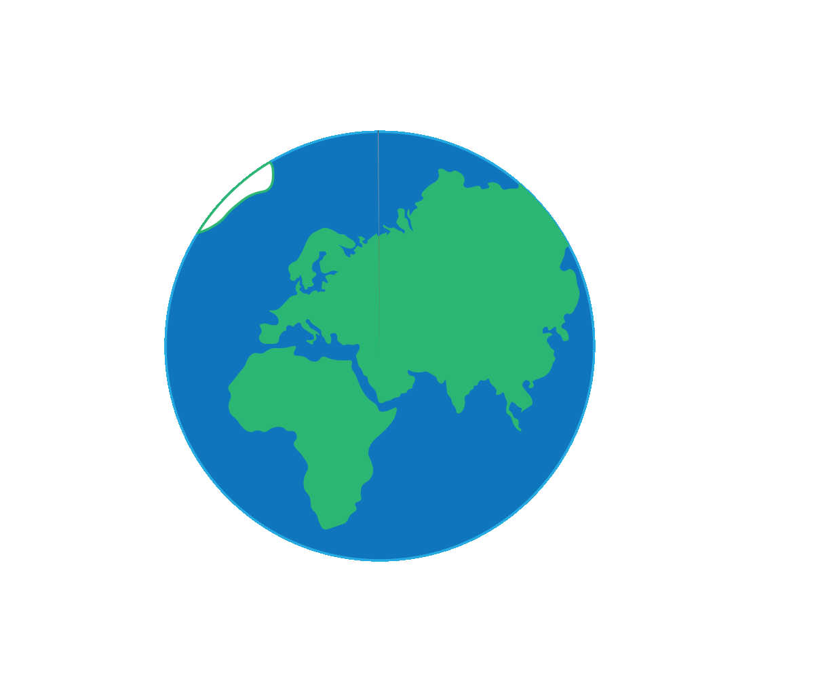

FLYTRAKIFFEN
I DANMARK
ER PÅ SIT HØJESTE
NOGENSINDE
I 2018 steg antallet af afrejsende flypassagerer fra de danske lufthavne til 18,2 mio hvoraf 90 pct fløj internationalt. Det samlede passagerantal var 706.000 eller 4 pct. højere end i 2017. Det er det største antal passagerer fra danske lufthavne nogensinde.
Hvor meget udleder du?
Når man flyver til en feriedestination er det for det meste smertefrit og nemt. Det underliggende probleme er at fly er verdens mest forurenende transportform. Luftfart udgør en kæmpe belastning for både miljø og klima. Fly udleder en stor del af danskernes årlige CO2 udslip, når det kommer til transport.
På data visualiseringen herunder kan du se nogle velkendte rejsedestinationer. Klik på dem og se hvor meget du ville udlede på den tur.
CO2 udledt på rejsen: kg CO2
Rejse tid: Timer og Minutter
For samme mængde CO2 kan du rejse km i tog
#STAYGROUNDED
Udleder for meget
Flyfart udleder alene i Danmark 36% af det årlige CO2 udslip, når det kommer til transport.
Kommer længere

En flytur tur-retur til New York vil udlede den samme mængde CO2 som en tog tur halvanden gang rundt om jorden!
NEDSÆT DIT FLYFORBRUG
Hvem er NOAH?
NOAH arbejder for, at alle nulevende og fremtidige generationer skal have lige adgang til jordens ressourcer - uden at miljøet overbelastes. Det kalder vi for miljøretfærdighed, og vi arbejder hver dag på at komme dette nærmere gennem vores miljøpolitiske programmer. NOAH sørger for at miljøet kommer i først række, og at vi alle står sammen for at skabe en bedre fremtid for de kommende generationer.
Klik på billedet for at få mere at vide.
Hvorfor støtte NOAH?
Når du støtter NOAH i kampen mod flyfart, støtter du vel organiseret og velstruktureret organisation som yder deres ypperste for at skabe opsigt omkring klimaet, samt sørge for at klimakrisen bliver hørt af dem der kan gøre noget ved det!
Ved at støtte os underskriver du samtidig for at udvidelsen af Kastrup lufthavn skal stoppes.
Klik på billedet for at se hvor slemt fly fart faktisk er.

Sådan kan DU hjælpe!
Hjælp os
For at hjælpe bevægelsen ville du kunne nedsætte dit fly forbrug. I stedet for at tage flyet til rom i efterårsferien så prøv at tage toget. I stedet for at flyve til Aalborg så tag toget over Danmark og nyd udsigten over de skønne marker.
Snak med andre
For at skabe mere opsigt omkring flyfarten i verden så snak med andre om det. Snak om hvad i kan gøre for at stoppe jeres eget aftryk på miljøet, og hvordan i kan undgå at flyve i fremtiden.
Sammen er vi stærke
En person har ikke meget mulighed for at ændre folks holdninger og rutiner. Men hvis man er sammen om det og enige om at der skal gøres noget ved problemet, kan vi sammen nedsætte fly forbruget i Danmark. Alene kan man løfte en sten, sammen kan man flytte bjerge.
Forklar andre om NOAH
NOAH har eksisteret i over 50 år, men der er stadig en del der ikke kender til vores budskaber og interesse for klimaet og miljøet. Netop derfor er det vigtigt for os at budskabet bliver delt ud, så de nye generationer kan hjælpe til. NOAH råder derfor til at man tager fat i sin arbejdsgiver og prøver at overbevise dem om hvorfor de skal indgå en “nul-fly-aftale” med NOAH så vi kan komme et skridt tættere på et nedsænket CO2 udslip.
Brug toget
Toget er et transportmiddel der er begyndt at blive mere og mere moderne. Fænomenet ved navn “interrail” er noget som mange unge gør brug af, og er noget som vi i NOAH er utrolig glade for er blevet en “trend”. Toget er nemlig det transportmiddel i verden der udleder mindst CO2. Man nemlig kan tage toget 17 gange i stedet for fly.
Men er det nu også sandt, at toget er det mest miljøvenlige transportvalg – altså ud over cykel og gåben. I DSBs årlige miljørapport viser beregninger, at toget udleder ca. 36 g CO2 (pr. personkilometer), mens biler og fly begge udleder over 100 g CO2.
Hjemmesider som f.eks. “www.bahn.de” er også med til at gøre det nemmere for os at rejse med toget, og på tværs af forskellige lande. Der er mange måder at rejse på, men tog er helt klart den som NOAH står bag. Rejs som os.